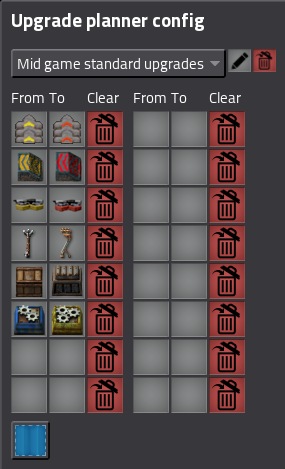
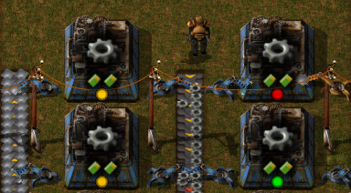
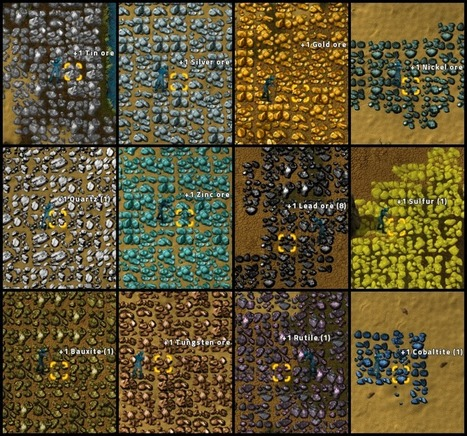
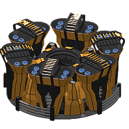
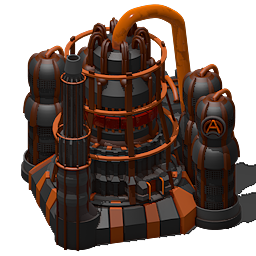

There are a few categories of mods. First, there are QoL (Quality of Life) mods.
Those improve the way the game is played and do some stuff for the players.
For example, there is the Upgrade Planner,
which allows you to quickly select belts and machines that you want to upgrade to the next tier and your robots do it automatically.

Bottleneck is a mod that puts a little circles in the bottom part of machines
that indicate whether the machine is fully satisfied and running or if it doesn't fully work and needs more resources or energy.
This is useful for locating so-called bottlenecks, places where resources limit the production.

The Squeak Through mod makes hitboxes of some objects a little bit smaller, just enough to let you walk between them.
In vanilla (unmodded game) it's often really tough to walk through for example solar panel arrays and this mod fixes it.
Then, there is another type of mods. Those are overall big expansion mods. The main ones are Bob's mod and Angel's mod.
Bob's mod is what is thought to be the biggest Factorio mod. Made by a user Bobingabout,
it adds around 12 new ores for you to explore and mine,
as well as many new tiers of things already in the game, like belts, inserters and assembling machines.
The automation is much harder and everything needs more resources to be made. These are the ores the mod adds:

Angel's mod adds new vehicles, bioprocessing, refining, logistics and smelting and makes refining much more realistic and complicated.
Angel's Mods adds a different way to do things, a bit harder than vanilla.
For example, you'll need to process ores in several steps to get plates out of them, but also offers alternatives,
like a smelter that can produce more plates per ore at the cost of being massively big and a real energy hog.


When players have mastered both these mods, playing with both at once is a completely new challenge.
Everything is two times as complicated and it's really hard to twist your mind around it completely.
If you want to have a look into other mods, you can always check the links for more information.